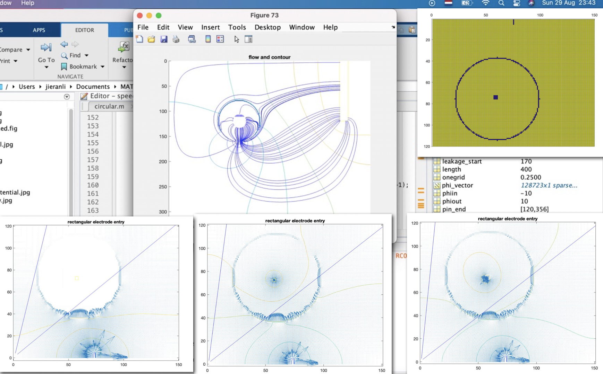
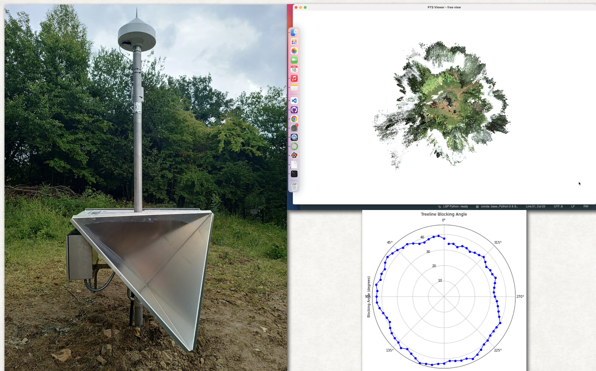
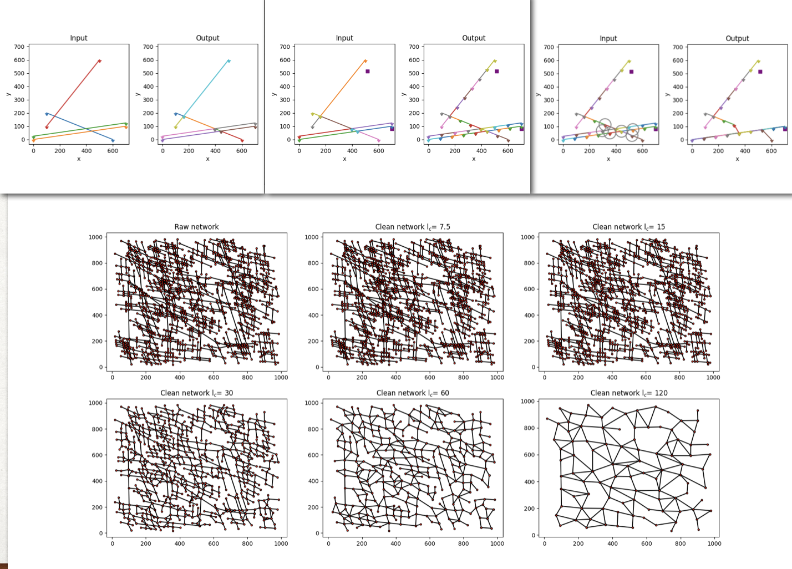
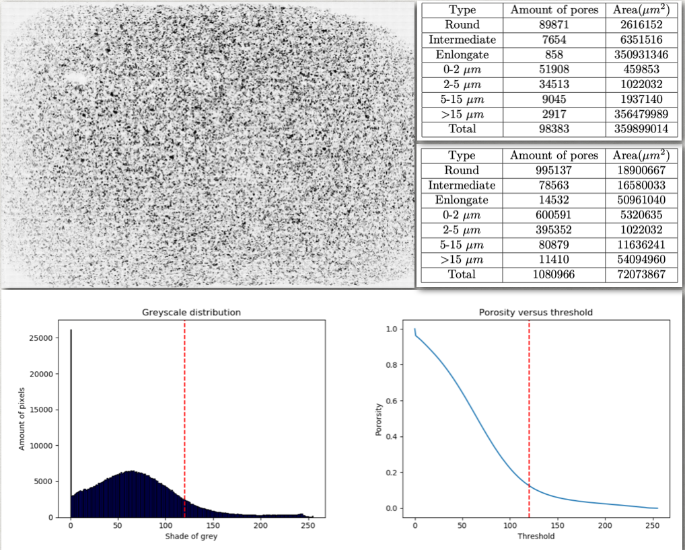

Numerical Modeling for Electric Current Detection in Pipeline Leakage

I developed a model to simulate electric current and potential distribution in terrain affected by underground pipeline leakage. This project relies on the finite difference method, using a coefficient matrix (conductivity at each location), boundary conditions (where voltage is induced and where conductivity is absent at the pipe surface), and a linear solver to simulate current and potential distribution.
The model helps maintenance technicians better understand the effects of leakage.
Geo-referencing and Mapping Project

Alongside my team, I participated in a project contributing to the geodetic datum EPSG in Limburg. We built an antenna to collect satellite and airborne data, serving as a georeference station for coordinate system updates.
My role involved laser scanning, photogrammetry to generate 3D models of terrain, calculating blockage angles from surrounding trees, and providing maintenance recommendations.
Fingerdrum – Showcasing UI Development
As a creative project, I designed a web-based virtual drum kit that maps laptop keyboard inputs to realistic drum sounds.
I implemented interactive sound mechanisms based on my experience as a drummer and finger-drummer. This project allowed me to explore front-end development and improve user interface design.
Numerical Modeling for Cleaning Fractures Underground

This university project focused on cleaning fracture segmentations in underground environments. I worked on geometric computation, determining if segment intersections are unique.
Since computing distances between tens of thousands of nodes can be slow, I used parallel computing to speed up the process and tested the code on DelftBLUE, a supercomputer. Another teammate explored meshing techniques to optimize calculations.
Image Processing for Microscopic Sandstone Data

For my bachelor’s thesis, I processed high-resolution microscopic images of sandstone to extract petrophysical properties such as porosity, grain size distribution, and shape indices.
One challenge was the data size—each thin-section image required about 15GB of memory. I developed methods to divide large images into tiles and combine partial results effectively.
Since geologists at my current company could benefit from this work, I am currently rewriting the image processing code in JavaScript and hosting it as a website.